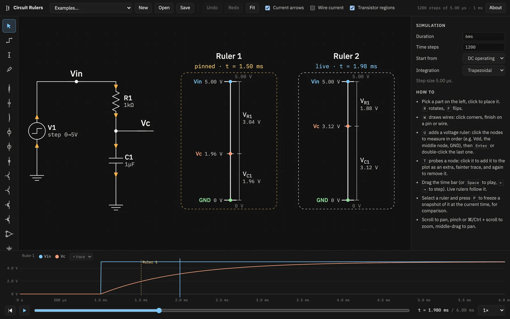
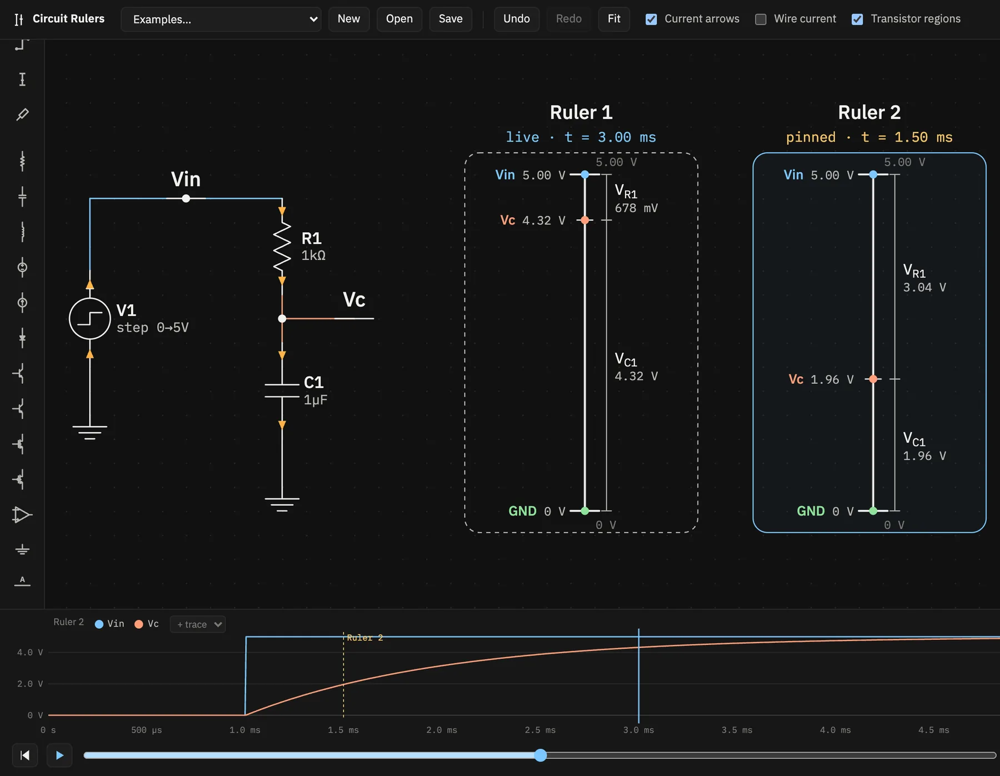
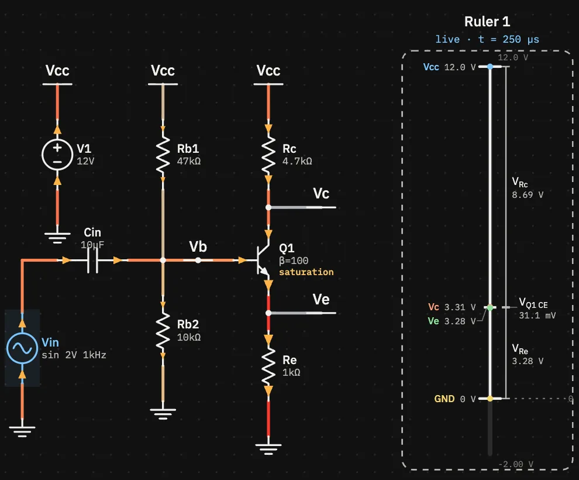

Circuit Rulers
An interactive schematic editor for building intuition about how analog circuits behave over time. Draw a circuit, scrub through its simulation, and read every node voltage off a voltage ruler drawn beside the schematic.

The idea
A ruler follows a path of nodes you click, for example Vdd → middle → GND. Its spine has a tick at each node, placed at that node's voltage on a scale shared by the whole circuit. A bracket beside the spine shows the voltage across each step of the path, labelled with the part it crosses (VR1, VQ1 CE, …).
A live ruler follows the time scrubber. A pinned ruler stays at one moment. Put the two side by side and you can see how the voltages shift as the circuit runs.
Everything runs in your browser: a small SPICE-like simulator, the editor and the drawing. There is no backend, and your circuit is saved to this browser's local storage.
Start with a tutorial


Features
- Drawing circuitsParts, wires, net labels, editing values, shortcuts and files.
- Voltage rulersPaths, step brackets, scales, and live and pinned rulers.
- Time and the plotSimulation settings, playback, sources, the plot and probes.
- Currents and regionsCurrent arrows, wire heat, readouts and transistor operating regions.
- Simulator and modelsHow the solver works, the device models and their limits.
- Examples23 built-in circuits, from a divider to a current-sense amplifier.